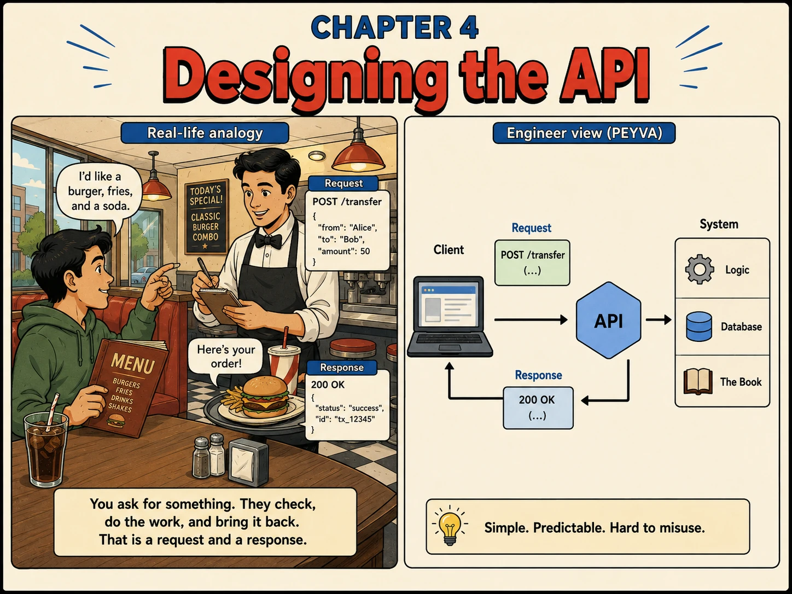

Chapter 4
Designing the API
You ask for something. They check, do the work, and bring it back. That is a request and a response.

1. Why
- An API is a contract about failure as much as success. The caller has to be able to tell 'you asked for something impossible' from 'I could not do it right now', because the correct response differs: fix the request, or try again.
- Status codes carry that distinction. 4xx means the request is wrong and retrying it unchanged will fail again; 5xx means the server is wrong and the same request may succeed later. Get this backwards and every client retries the wrong things.
- Validation happens before any state changes, in full. Debiting the payer and then discovering the recipient does not exist is a bug that creates money out of an error path.
- The reference returned for a payment is the caller's only handle on what happened. It will be quoted in support tickets, in retries and in the audit trail. Generate it once, and never reuse one.
- Separating the front door from the thing that moves money is not ceremony. Parsing, authentication and rate limiting change often; the rules for moving money must not. Keeping them in different components keeps churn away from the invariants.
- A response of 200 means the money moved and was recorded. Sending it before that is true is a promise the system may not keep, and the caller will act on the promise.
2. Concepts
- Endpoint. A specific thing the API lets you do: POST /transfer, for moving money.
- Request Body. The details of what you're asking for, e.g. {"from": "alice", "to": "bob", "amount": 20}.
- Status Codes. A predictable signal of what happened: 2xx it worked, 4xx your request is wrong, 5xx the server failed and the same request might work later.
- Validation. Checking the request makes sense before doing any work, rejecting bad orders instead of guessing.
- Teller. The component that handles a payment end to end. The Gateway forwards requests and never touches a balance itself.
3. Build It Hands-on Building in Go, change in Chapter 0
Few-shot (multishot) prompting. Prose leaves field names and status codes up for grabs. Examples pin them down, failures included.
Documented in The Prompt Report: In-Context Learning; Anthropic, Use examples effectively
Every prompt below is copied with these rules, about 661 tokens for the chapter
Build this in Go, standard library only.
Code in peyva/<component>/, one folder per component.
Money: exact decimal or integer minor units, never floating point, two decimal places.
The goal and invariants are in peyva/goal.md.
The Portal is plain HTML and CSS. No framework, no build step, no dependencies.
It lives in peyva/portal/. Anything it needs from the server is Go, standard library only.
One customer's wallet at a time, never everyone's at once. A switcher at the top says whose.
New work joins the menu.
The goal and invariants are in peyva/goal.md, the look in peyva/portal/design.md.
1 of 2 Build~360 tokens
Requests reach the Gateway but nothing acts on them. Have it speak HTTP, and build the Teller behind it.
The Teller handles one payment end to end: validate the request, check the payer has enough, move the amount between accounts in the Vault, and return a reference the caller can quote later. The Teller is the only thing allowed to move money: the Gateway parses and forwards, and never touches a balance itself.
Add one more endpoint: open an account for a handle that does not exist yet, starting at zero.
Match these exactly:
{"from": "alice", "to": "bob", "amount": 20}
-> 200 {"status": "success", "reference": "tx_7f3b9c2a"}
{"from": "alice", "to": "bob"}
-> 400 {"error": "amount must be greater than zero"}
{"from": "alice", "to": "nobody", "amount": 20}
-> 404 {"error": "unknown account: nobody"}
not json
-> 400 {"error": "invalid JSON body"}
Validate before touching any account. A 4xx means the request is wrong and the same request will fail again; reserve 5xx for the server failing. No authentication, no retries, no persistence: later chapters.
Done when those four requests produce exactly those four responses, and alice's balance drops by 20 only on the first.
2 of 2 Portal~301 tokens
The Portal's menu has one entry, Balance, and no way to move money out of the account it is showing. Add Send to it, and a way to open a new account by handle. A new account joins the switcher. There is no From field. Money leaves whoever the switcher names. The forms post to the endpoints you just built and render what comes back. Match these: open an account -> the new handle appears with a balance of 0.00 send to a handle -> the reference comes back and the payer's balance drops amount left blank -> the page says which field is wrong, and nothing moves unknown handle -> the page says so, and nothing moves Every failure shows on the page, never a blank screen or a raw error. Done when those four cases each produce exactly what is written above, and switching to the recipient shows the money arrived.
Quick tip: Validate before you touch any data. Reject bad requests instead of guessing what the caller meant.